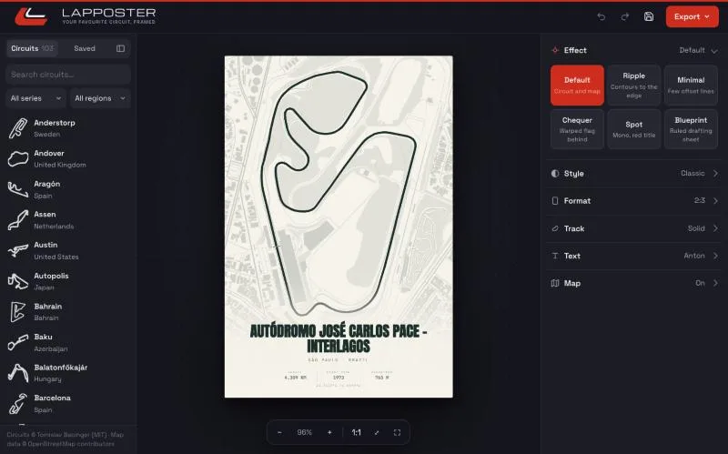
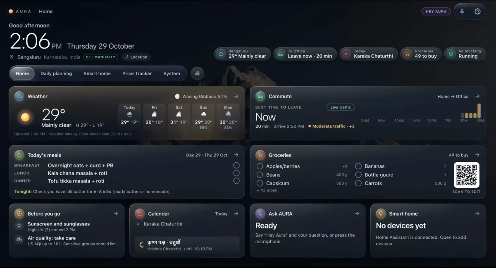
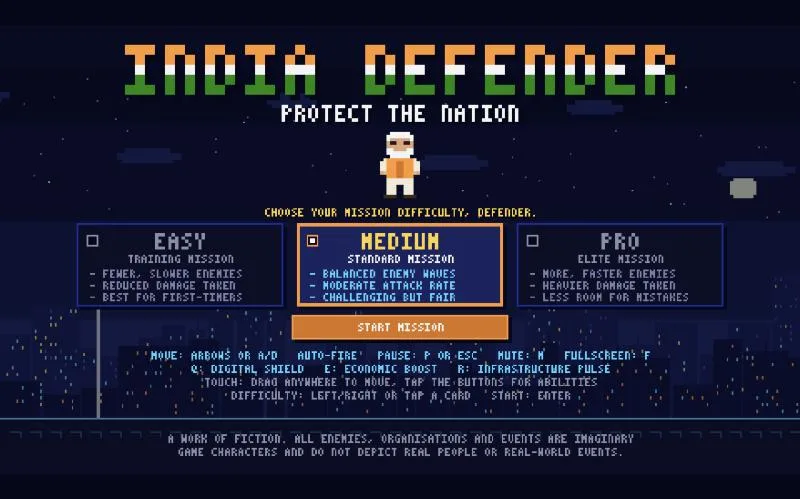

01
NDA
Sliderequest
From complex presentation workflows to one simple experience.
Available for new work
Product designer who thinks…
design should feel simple.
Scroll to view a few of the projects.
01 — The idea
Behind every simple experience is usually something complicated.
happy users
Complexity comes in.
Design untangles it.
Complexity became simple.
02 — The work
From complex presentation workflows to one simple experience.
From scattered workforce data to simple planning.
From insurance overload to simple choices.
From hundreds of credit cards to one simple recommendation.
Blending Indian heritage with a simple, modern identity.
A premium activewear brand, made simple to believe in.
03 — Claude skills
Skills I made to teach Claude how I work, so it does the job my way every time.
/prd-assistantPRD AssistantDrafts a Product Requirements Document one phase at a time, from Initiate to Evaluate. Asks three questions first, never invents content, and writes the PRD to Confluence./product-designer-insightsProduct Designer InsightsTurns PRDs, research and feedback into traceable design insights, each linked to its source./design-system-pattern-finderDesign System Pattern FinderFinds the existing patterns and components that fit a requirement, before anyone designs something new./automated-usability-studiesAutomated Usability StudiesWalks through tasks against heuristics and requirements to catch issues early. A simulated audit, not user research./pattern-inspirationPattern InspirationCurates real UI examples for a design problem and turns them into principles, not copies./competitive-analysisCompetitive AnalysisBenchmarks competitors’ workflows from public sources, with every claim dated and cited./ai-workflow-generatorAI Workflow GeneratorTurns a standard workflow into an AI-agent workflow with clear roles, approvals and recovery paths./whiteboard-to-mockupWhiteboard to MockupTurns sketches and whiteboard photos into a journey map and screen specs ready for Figma./localization-verificationLocalization VerificationChecks strings and screens across languages for terminology, layout breaks and locale formats./edge-case-and-accessibility-auditEdge Case & Accessibility AuditFinds missing states, edge cases, error handling and accessibility gaps before they ship./visual-reviewVisual ReviewFinds broken components, missing tokens, style overrides and spacing issues, then suggests fixes./design-system-guidelinesDesign System GuidelinesChecks a proposed UI follows the design system’s layouts, patterns and conventions./figma-to-code-checkerFigma to Code CheckerCompares the built UI with the approved Figma file and lists every difference to fix./create-new-componentsCreate New ComponentsDrafts new components from existing patterns, with variants, states and usage notes./create-icons-and-illustrationsCreate Icons & IllustrationsCreates icon and illustration concepts that match the creative guidelines and existing library./rename-framesRename FramesRenames Figma frames clearly and consistently, based on what each frame contains./swap-archived-componentsSwap Archived ComponentsMoves a file from an archived library to the current one, keeping content and overrides./comments-to-task-listComments to Task ListTurns Figma comments and sticky notes into a clear task list on the canvas./token-handoffToken HandoffHands design-token changes to engineering with names, values, docs and status./icon-handoffIcon HandoffRuns icon handoff end to end and tracks it until engineering confirms./illustration-handoffIllustration HandoffRuns illustration handoff end to end and tracks it until engineering confirms./log-design-requestsLog Design RequestsCollects design-team requests from every channel into one log, so nothing gets lost./track-open-ticketsTrack Open TicketsTracks the team’s open tickets and surfaces what’s blocked, overdue or needs attention./feature-request-insightsFeature Request InsightsTurns raw customer feature requests into patterns, friction points and prioritised needs./evidence-based-personasEvidence-Based PersonasBuilds personas from real research and customer evidence, never from assumptions./research-repository-searchResearch Repository SearchSearches every connected research source and returns cited answers to a research question./analytics-event-discoveryAnalytics Event DiscoveryFinds the analytics events a feature already tracks, reads trends and fills the gaps./participant-recruitmentParticipant RecruitmentFinds, screens and schedules the right participants for a study./ux-copy-first-draftsUX Copy First DraftsWrites first drafts of UI copy with before/after examples and reasons./plain-language-reviewPlain Language ReviewFlags hard sentences and jargon in UI copy and suggests clearer words./terminology-reviewerTerminology ReviewerFinds inconsistent terms across the codebase and proposes bulk fixes./ux-writing-code-reviewUX Writing Code ReviewReviews UI strings in pull requests for voice, tone and terminology./ux-writing-prd-insightsUX Writing PRD InsightsReads a PRD from a content angle and sets the terms a feature should use./product-email-reviewProduct Email ReviewReviews customer emails for voice, tone and content guidelines./enrich-writing-guidelinesEnrich Writing GuidelinesStrengthens UX writing guidelines with patterns from the product and competitors.~/.claude/skills/.Use Visual Review on this Figma file, and share your files.
04 — Brain itch
Side projects I build when an idea won’t leave me alone.
macOS app · Menu bar
Notices when a Zoom, Teams or Meet call starts and writes a live, timestamped transcript. It runs on your Mac, keeps other people anonymous, and gives your AI agent what it needs for to-dos and minutes.

Web app · Poster maker
Pick any of 103 race circuits, lay the track over a real map, choose an effect, style and format, then export a poster ready to print and frame.

Raspberry Pi · Home dashboard
A calm home screen that runs on a Raspberry Pi. Weather, commute, meals, groceries, calendar and smart home on one glanceable page, plus a “Hey Aura” voice assistant.

Browser game · Pixel art
A pixel-art arcade defence game. Guard the nation’s infrastructure over four levels, use three special abilities and take on the Shadow Commander. Plays with keys or touch.
05 — Side quest — Arcade mode
A little side quest between projects. How long can you survive?
← → / A D move · auto-fire · P / Esc pause · F full screen · Enter start